kIPTV
Um player rápido e sem distrações para as suas listas M3U, no iPhone, iPad e Mac.
Veja o app
Canais com logos, qualidade e favoritos Assistindo um canal 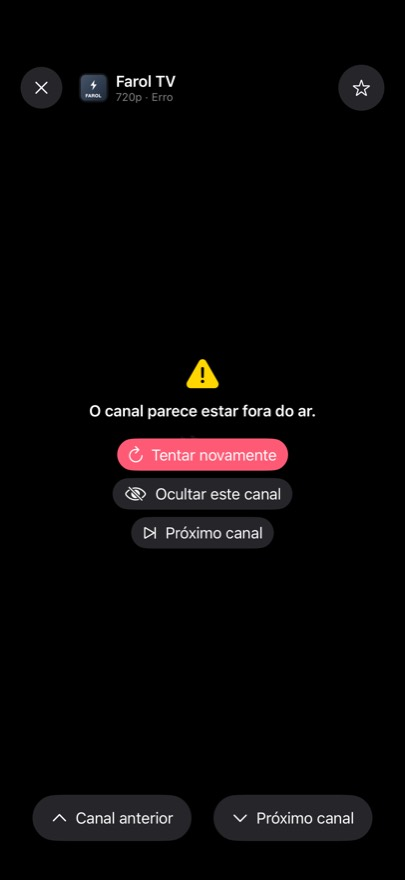
Canal fora do ar: tente de novo, oculte ou pule Sobre e gorjeta opcional
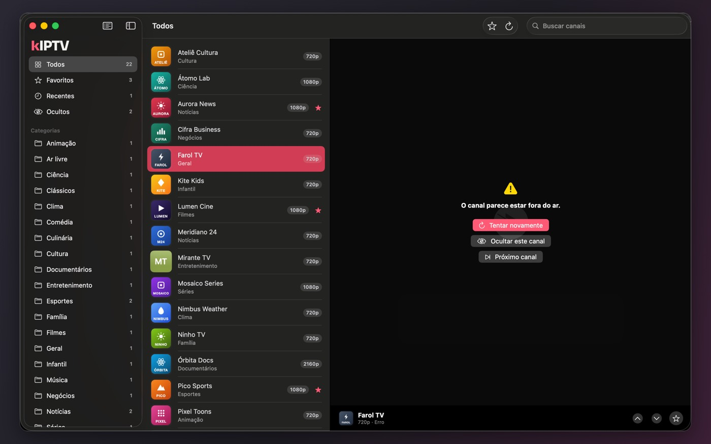
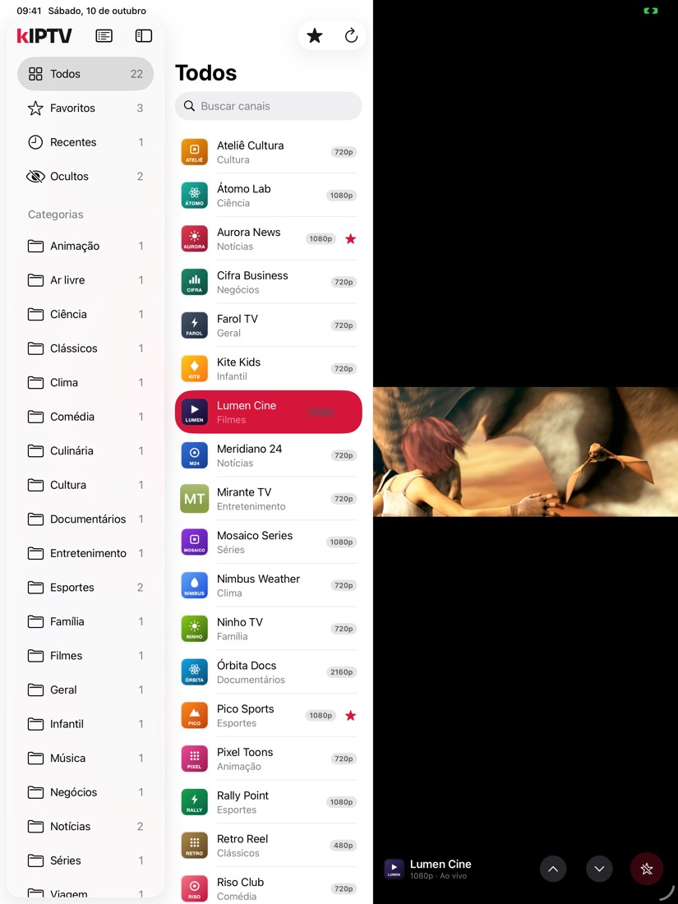
- Suas listas, do seu jeito. Adicione listas M3U por link ou arquivo. Elas ficam salvas no aparelho para navegar mesmo sem internet.
- Tudo numa tela. Categorias automáticas, busca instantânea, favoritos e recentes.
- Feito para cada aparelho. Picture in Picture, AirPlay, barra lateral no iPad e no Mac e atalhos de teclado.
- Honesto quando algo falha. Mensagens claras quando um vídeo está fora do ar ou não é compatível.
- Privado. Sem anúncios, sem conta e sem coleta de dados.
Importante: o kIPTV não fornece canais, listas nem qualquer conteúdo. Ele apenas reproduz as listas que você adiciona. Use somente listas que você tem o direito de acessar.
In English
kIPTV is a fast, distraction-free player for your M3U playlists on iPhone, iPad and Mac: playlists by link or file, automatic categories, instant search, favorites, Picture in Picture and AirPlay. No ads, no account, no data collection.
kIPTV does not provide any channels, playlists or content. It only plays the playlists you add. Use only playlists you have the right to access.
Screenshots
Channels with logos, quality and favorites 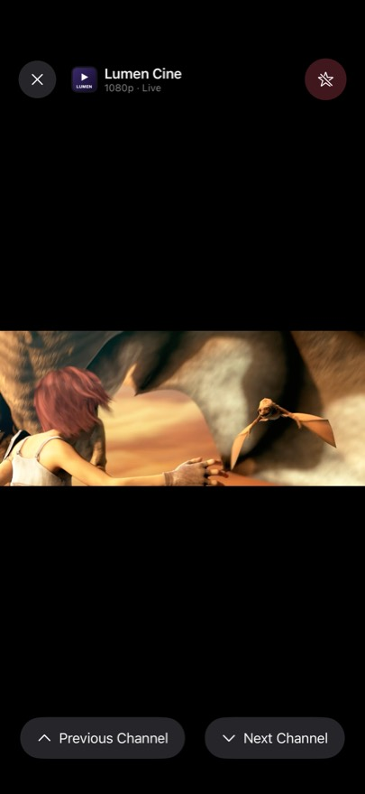
Watching a channel 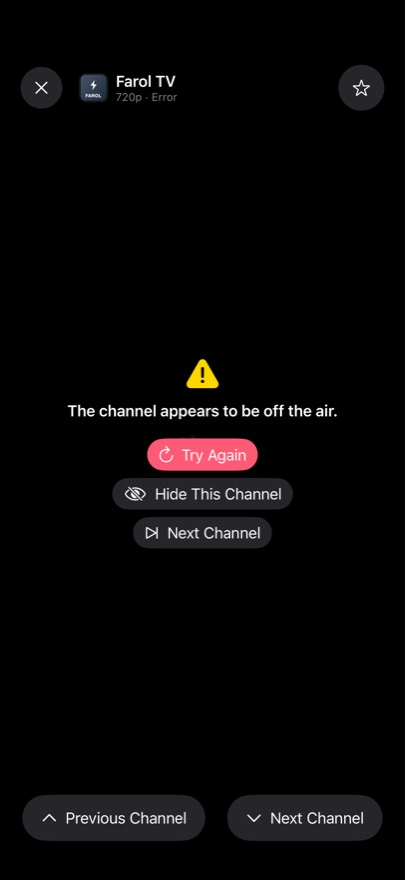
Channel down: retry, hide or skip 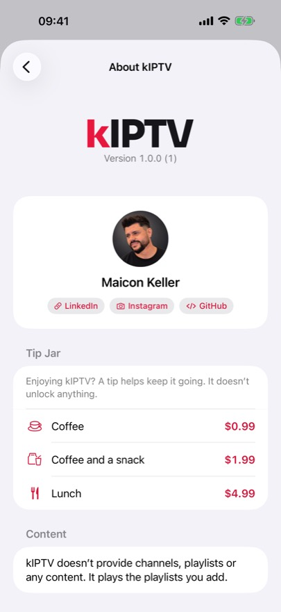
About and optional tip
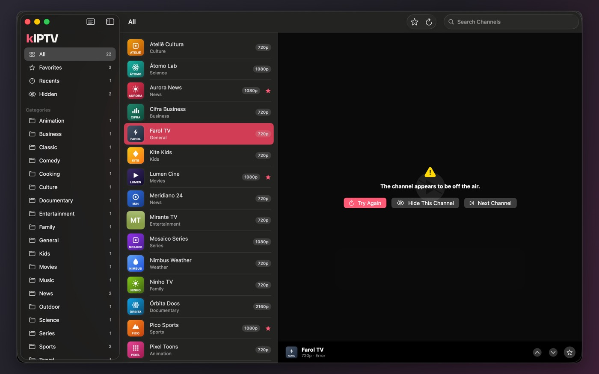
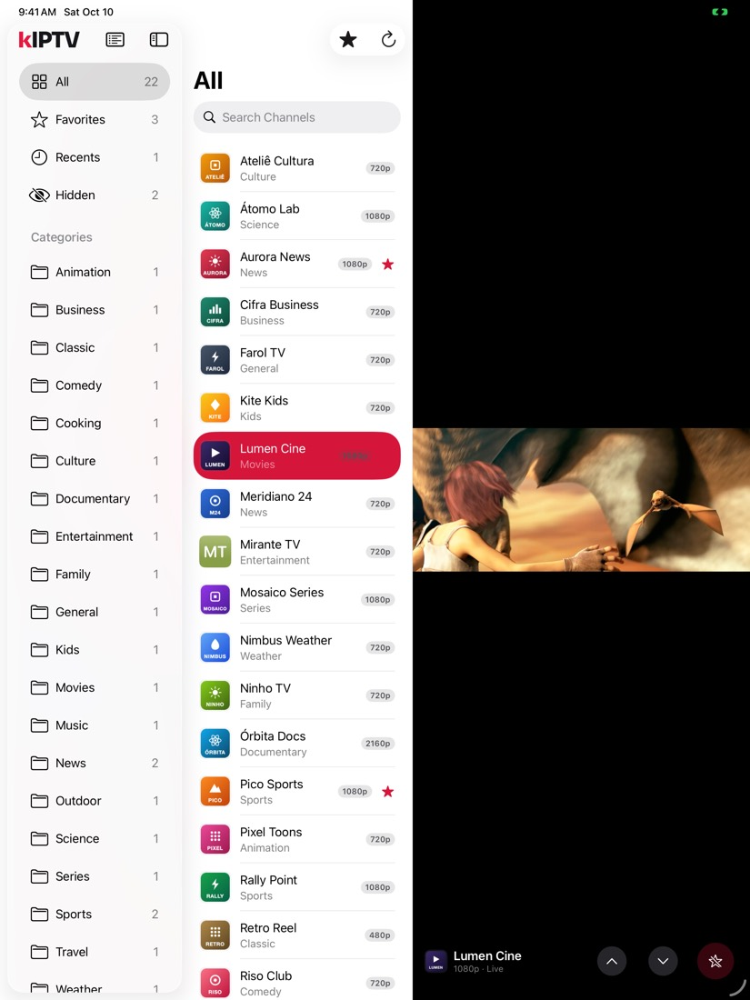
En español
kIPTV es un reproductor rápido y sin distracciones para tus listas M3U en iPhone, iPad y Mac: listas por enlace o archivo, categorías automáticas, búsqueda instantánea, favoritos, Picture in Picture y AirPlay. Sin anuncios, sin cuenta y sin recopilación de datos. La app está en español, portugués e inglés.
kIPTV no ofrece canales, listas ni ningún contenido. Solo reproduce las listas que agregas. Usa únicamente listas a las que tengas derecho de acceso.
Capturas
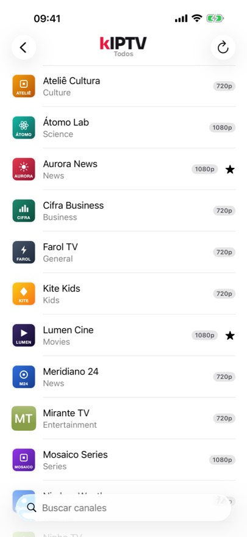
Canales con logos, calidad y favoritos Viendo un canal 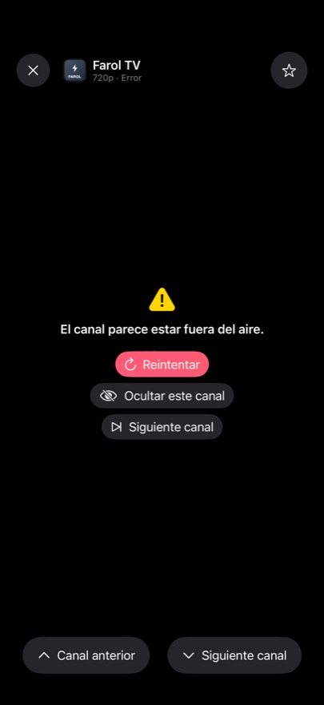
Canal caído: reintenta, oculta o salta 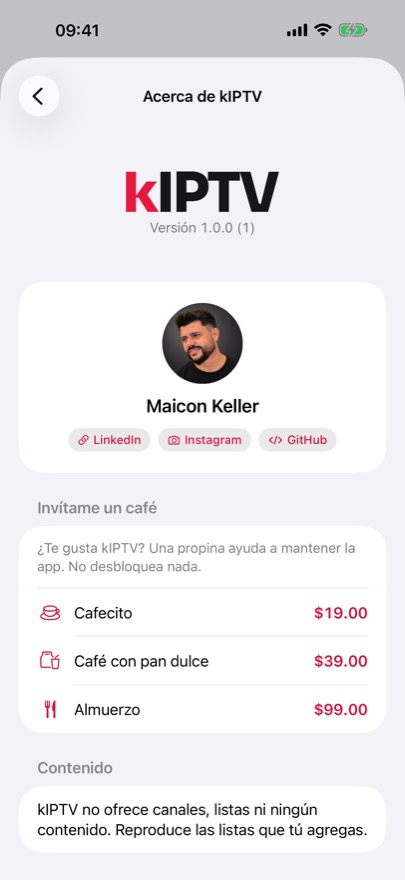
Acerca de y propina opcional
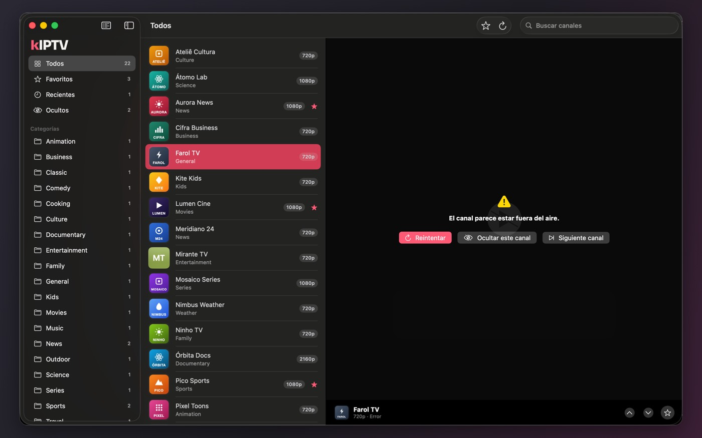